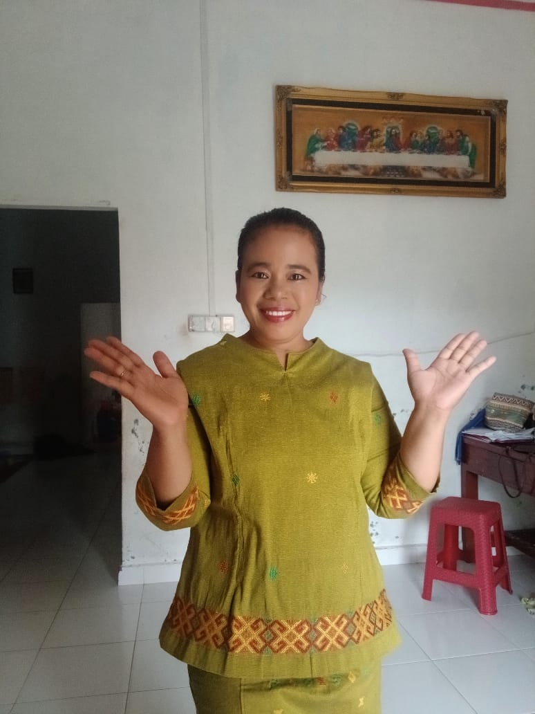

----Hallo All I am
Dewi Intan Harianja
Saya seorang guru di SMA Negeri 5 Kundur. Saya mengajar mulai tahun 2008. Hobby saya berenang, membaca dan traveling

Website ini dibuat sebagai wadah bagi saya untuk mengkpresikan diri untuk lebih lagi dalam dunia maya. Memperluas wawasan sekaligus berbagi informasi, membantu rekan dunia maya dalam dunia pendidikan
Cyber Security adalah sistem yang dirancang khusus untuk melindungi jaringan dan perangkat dari serangan siber yang beragam, seperti malware, phishing, dan denial of service. Jadi, bayangkan siber sebagai sebuah dunia paralel dimana kita saling terhubung melalui internet untuk mengakses informasi dan layanan. Namun, tidak semua pengguna menggunakan siber dengan bijak. Hal ini sering kali mengarah pada tindakan kejahatan siber yang dapat merugikan individu, organisasi, perusahaan, bahkan hingga pemerintahan. Oleh karena itu, Cyber Security menjadi sangat penting untuk dipahami dan diimplementasikan oleh setiap individu.
Artificial Intelligence (AI) atau kecerdasan buatan adalah rekayasa teknologi yang memungkinkan sistem komputer, software, yang dibuat dan diprogram untuk dapat “berpikir” seperti manusia dan meniru tindakan mereka. Karakteristik AI adalah kemampuannya dalam merasionalisasi dan mengambil tindakan yang memiliki peluang terbaik untuk mencapai tujuan tertentu. Tujuan kecerdasan buatan umumnya digunakan untuk pembelajaran, penalaran, dan lain sebagainya.
Pengembangan web atau web development adalah sebuah proses untuk pemeliharaan sekaligus pembangunan sebuah situs. Dalam hal ini, tugas web development adalah untuk menciptakan situs yang menarik, kinerjanya cepat dengan sesuai kebutuhan pelanggan. Proses pengembangan web ini dilakukan melalui mulai dari desain, konten, pembuatan skrip, persiapan server hingga pengaturan keamanan jaringan. Spesialisasi yang perlu ada dalam melakukan web development adalah meliputi pembuatan kode halaman situs menggunakan editor teks, menciptakan web memakai dreamweaver, pembaruan blog, dan lain sebagainya.
Tutor/ Pengajar
Tutor/ Pengajar
Tutor/ Pengajar
Konten kreator Pendidikan
Jl. Parit Muda Kel. Tanjung Batu Barat Kecamatan Kundur Kab. Karimu Propinsi Kepulauan Riau No. HP. 08117771158